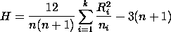

j Rij.
j Rij.
| [Stat Inf II classnotes, ISI, Kolkata] |
Example:
Suppose that we want to compare among the performance of k fertilisers on
growth of plants. For this we take k groups of plants, with ni
many plants in group i, and apply fertiliser i on the i-th group. Let
the j-th plant in the i-th group experience a growth of amount
Xij. We assume that all the Xij's are mutually
independent and
where the Fi's are unknown continuous distributions. We want to testX1j's are iid F1 for j=1,...,n1 X2j's are iid F2 for j=1,...,n2 ... Xkj's are iid Fk for j=1,...,nk, H0: All Fi's are the same Vs. H1: not H0. |
In the Kruskal-Wallis test we first pool all the k samples. Let Rij denote the rank of Xij in the pooled sample. Define
Ri =
| Exercise KSAMP.1: Find E(Ri) under H0. |
H = 12/(n(n+1)where n =
ni.
Here is the motivation behind this test. By the last exercise we see that H is a linear combination of the squared deviations of Ri's from their respective null means. Thus a large value of R signals potential departure from H0. The constants are chosen appropriately so that the following asymptotic distribution holds:
Theorem:
If all the ni's are "moderately large" then under
the null hypothesis
H is asymptotically |
Proof:
Not to be done in this course. Note that we have not even
stated the theorem fully rigourously, leaving the term "moderately large"
undefined.

|
| Exercise KSAMP.2: Argue that H is distribution-free under H0. No asymptotics here. |
|
Exercise KSAMP.3:
Show that

|